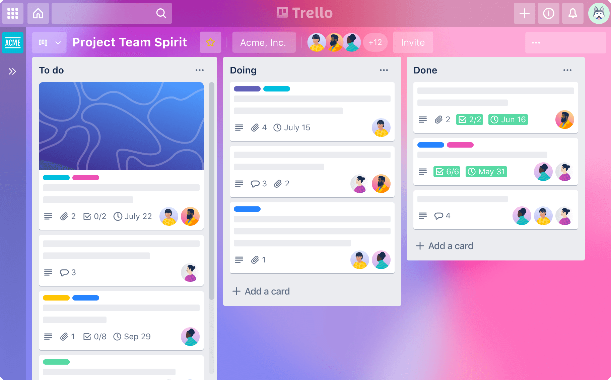

Tendencias en Programación (Proyectos)
Lenguaje: PHP, JavaScript
Descripción: Una de las redes sociales más grandes del mundo, permite conectar con amigos y compartir contenido.
Características: Mensajería instantánea, grupos, eventos y una amplia API para desarrolladores.
Impacto: Transformó la forma en que las personas se comunican y comparten información.
Fecha de Lanzamiento: 2004
YouTube
Lenguajes: Python, JavaScript
Descripción: Plataforma de intercambio de videos donde los usuarios pueden subir, compartir y ver contenido en video.
Características: Comentarios, suscripciones, listas de reproducción y recomendaciones personalizadas.
Impacto: Transformó el consumo de medios y se convirtió en una herramienta vital para creadores y empresas.
Fecha de Lanzamiento: 2005
Lenguaje: Python, JavaScript
Descripción: Plataforma para compartir fotos y videos con un enfoque en la estética visual.
Características: Filtros para fotos, historias, mensajes directos y comercio electrónico.
Impacto: Cambió la manera en que se promueven las marcas y se interactúa con el contenido visual.
Fecha de Lanzamiento: 2010
Minecraft

Lenguajes: Java, C++
Descripción: Juego de construcción y aventura donde los jugadores pueden explorar un mundo abierto, construir estructuras y sobrevivir.
Características: Modos de juego como creativo y supervivencia, multijugador y amplia personalización.
Impacto: Ha influido en el desarrollo de otros juegos y ha fomentado la creatividad en jugadores de todas las edades.
Fecha de Lanzamiento: 2011
Lenguaje: Ruby, JavaScript
Descripción: Red social para microblogging que permite a los usuarios publicar y interactuar con mensajes cortos.
Características: Tweets, retweets, menciones y tendencias.
Impacto: Influye en la opinión pública y se usa ampliamente para noticias y activismo.
Fecha de Lanzamiento: 2006
Lenguajes: Python, JavaScript
Descripción: Sitio web de agregación de noticias y contenido generado por los usuarios, donde se pueden votar publicaciones y comentarios.
Características: Subforos (subreddits), votaciones, comentarios y AMAs (Ask Me Anything).
Impacto: Se convirtió en un espacio importante para discusiones y contenido viral en Internet.
Fecha de Lanzamiento: 2005

Lenguaje: Erlang, JavaScript
Descripción: Aplicación de mensajería instantánea que permite enviar mensajes de texto, voz y video.
Características: Llamadas de voz y video, chats grupales y cifrado de extremo a extremo.
Impacto: Revolucionó la comunicación móvil y la mensajería instantánea.
Fecha de Lanzamiento: 2009
Spotify
Lenguajes: Java, Python, C++
Descripción: Plataforma de streaming de música que permite a los usuarios escuchar canciones y crear listas de reproducción.
Características: Recomendaciones personalizadas, playlists colaborativas y acceso a una amplia biblioteca musical.
Impacto: Revolucionó la forma en que se consume música, desplazando las descargas de archivos y promoviendo el streaming.
Fecha de Lanzamiento: 2006
TikTok
Lenguaje: Java, Python
Descripción: Plataforma de videos cortos que permite crear y compartir contenido musical y de entretenimiento.
Características: Efectos visuales, música integrada, y herramientas de edición.
Impacto: Se convirtió en un fenómeno cultural, influyendo en tendencias y en la música.
Fecha de Lanzamiento: 2016
Slack
Lenguajes: PHP, JavaScript
Descripción: Herramienta de comunicación en equipo que facilita la colaboración a través de canales y mensajes directos.
Características: Integraciones con otras aplicaciones, búsqueda avanzada y soporte para compartir archivos.
Impacto: Mejoró la comunicación empresarial y cambió la forma en que las organizaciones gestionan la colaboración.
Fecha de Lanzamiento: 2013
6. LinkedIn
Lenguaje: Java, JavaScript
Descripción: Red social profesional que permite a los usuarios conectar y compartir experiencias laborales.
Características: Creación de perfiles profesionales, búsqueda de empleo y networking.
Impacto: Se convirtió en la plataforma principal para reclutamiento y desarrollo profesional.
Fecha de Lanzamiento: 2003
Lenguajes: Ruby, JavaScript
Descripción: Plataforma de descubrimiento visual donde los usuarios pueden guardar y compartir ideas a través de "pines".
Características: Tableros, búsqueda visual y recomendaciones basadas en intereses.
Impacto: Se convirtió en una herramienta clave para el marketing visual y la inspiración en diseño.
Fecha de Lanzamiento: 2010
Trello
Lenguajes: JavaScript, Backbone.js
Descripción: Aplicación de gestión de proyectos basada en tableros que permite organizar tareas y colaborar en equipo.
Características: Listas, tarjetas, comentarios y adjuntos.
Impacto: Ayudó a equipos a mejorar la organización y seguimiento de proyectos.
Fecha de Lanzamiento: 2011
Angry Birds
Lenguajes: C++, Objective-C
Descripción: Juego de arcade en el que los jugadores utilizan un tirachinas para lanzar aves contra estructuras para derribar cerdos.
Características: Niveles desafiantes, física del juego y personajes icónicos.
Impacto: Se convirtió en uno de los juegos móviles más exitosos y reconocidos en todo el mundo.
Fecha de Lanzamiento: 2009
WhatsApp Web

Lenguajes: JavaScript, HTML, CSS
Descripción: Extensión de la popular aplicación de mensajería que permite a los usuarios chatear desde su navegador.
Características: Sincronización con el móvil, envíos de mensajes, llamadas y video llamadas.
Impacto: Aumentó la comodidad de la mensajería instantánea y la comunicación en dispositivos de escritorio.
Fecha de Lanzamiento: 2015
Etsy
Lenguajes: PHP, JavaScript
Descripción: Mercado en línea para productos hechos a mano y vintage, así como materiales para artesanía.
Características: Tiendas personalizadas, métodos de pago seguros y opciones de envío.
Impacto: Fomentó el comercio de productos únicos y apoyó a emprendedores creativos.
Fecha de Lanzamiento: 2005
Discord
Lenguajes: Elixir, JavaScript
Descripción: Plataforma de comunicación diseñada para comunidades, ofreciendo chat de voz, video y texto.
Características: Servidores personalizables, bots y opciones de moderación.
Impacto: Se convirtió en un espacio popular para gamers y comunidades en línea.
Fecha de Lanzamiento: 2015
Airbnb
Lenguajes: Ruby on Rails, JavaScript
Descripción: Plataforma que permite a los usuarios alquilar o reservar alojamiento en propiedades privadas.
Características: Búsqueda de alojamientos, perfiles de anfitriones, y sistema de calificaciones.
Impacto: Revolucionó la industria del turismo y la hospitalidad, proporcionando alternativas a los hoteles tradicionales.
Fecha de Lanzamiento: 2008
Netflix
Lenguajes: Java, Python, JavaScript
Descripción: Plataforma de streaming que ofrece una amplia variedad de películas, series y documentales.
Características: Recomendaciones personalizadas, contenido original, y visualización offline.
Impacto: Ha transformado la industria del entretenimiento, permitiendo el consumo de contenido bajo demanda.
Fecha de Lanzamiento: 1997 (servicio de streaming lanzado en 2007)
Snapchat
Lenguajes: Objective-C, Java, C++
Descripción: Aplicación de mensajería que permite el envío de fotos y videos que desaparecen después de ser vistos.
Características: Filtros de realidad aumentada, historias, y mensajes efímeros.
Impacto: Ha influido en la forma en que los jóvenes se comunican y comparten momentos.
Fecha de Lanzamiento: 2011